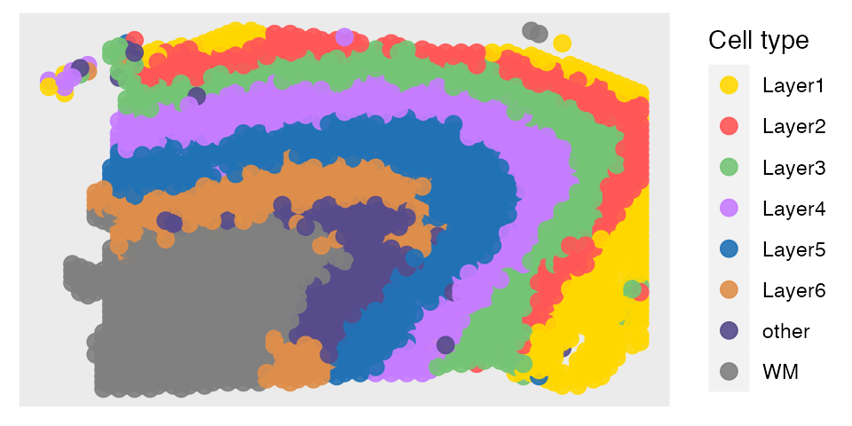
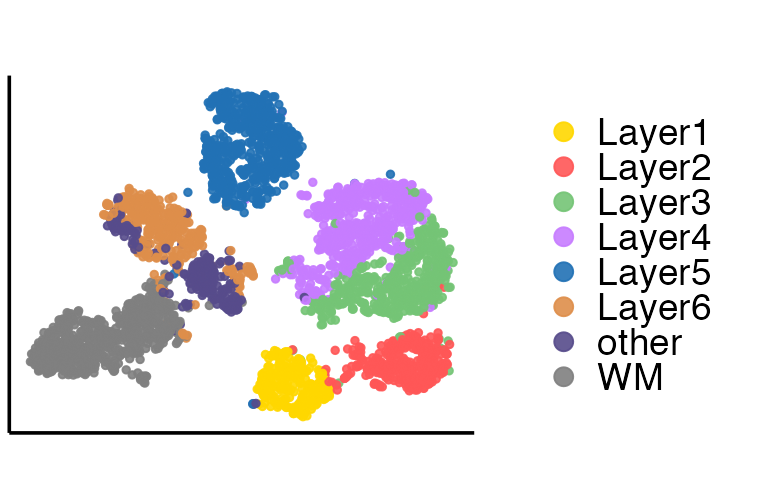
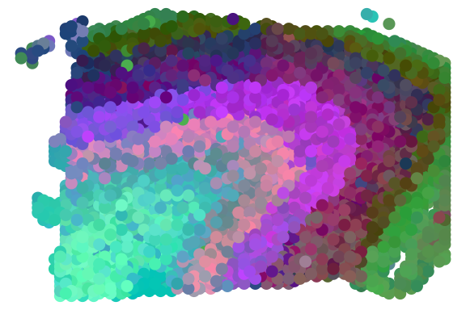
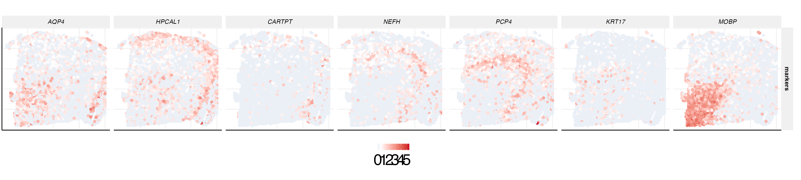

brain.RmdWe obtained the human brain slices data from the spatialLIBD project. This data consists of gene expression levels in form of read counts which are collected for a number of spatial locations. We followed to focus on the 9th slices of the human brain section 12, which contains 2000 genes and 3639 spatial locations. The gene expression of the 9th slices human brain section 12 and ground truth are both stored in the R package SpatialAnno.
First, we load the brain datasets and extract the position of each spot from spot name.
set.seed(99)
library(SpatialAnno)
load(file = paste0(path.package("SpatialAnno"),"/extdata/brain.RData"))
print(X[1:6,1:6])## ENSG00000187608 ENSG00000179403 ENSG00000187730
## AAACAAGTATCTCCCA-1 0.0000000 0.4655466 1.0993096
## AAACAATCTACTAGCA-1 0.0000000 0.0000000 1.5349570
## AAACACCAATAACTGC-1 0.0000000 0.0000000 0.9662463
## AAACAGAGCGACTCCT-1 0.0000000 0.0000000 0.7453531
## AAACAGCTTTCAGAAG-1 0.8048847 0.0000000 0.0000000
## AAACAGGGTCTATATT-1 0.0000000 0.0000000 0.8860993
## ENSG00000069424 ENSG00000116251 ENSG00000097021
## AAACAAGTATCTCCCA-1 1.099310 1.538142 1.335347
## AAACAATCTACTAGCA-1 1.534957 0.000000 0.000000
## AAACACCAATAACTGC-1 0.000000 1.539780 0.000000
## AAACAGAGCGACTCCT-1 1.889683 1.598915 0.000000
## AAACAGCTTTCAGAAG-1 0.000000 1.696447 0.000000
## AAACAGGGTCTATATT-1 0.000000 1.825589 0.000000
head(dlpfc)## class: SingleCellExperiment
## dim: 6 3639
## metadata(2): image BayesSpace.data
## assays(2): counts logcounts
## rownames(6): ENSG00000243485 ENSG00000237613 ... ENSG00000239945
## ENSG00000239906
## rowData names(9): source type ... gene_search is_top_hvg
## colnames(3639): AAACAAGTATCTCCCA-1 AAACAATCTACTAGCA-1 ...
## TTGTTTGTATTACACG-1 TTGTTTGTGTAAATTC-1
## colData names(80): barcode sample_name ... x_gc r_gc
## reducedDimNames(6): PCA TSNE_perplexity50 ... TSNE_perplexity80
## UMAP_neighbors15
## mainExpName: NULL
## altExpNames(0):## [,1] [,2]
## [1,] 50 102
## [2,] 3 43
## [3,] 59 19
## [4,] 14 94
## [5,] 43 9
## [6,] 47 13In order to calculate the Adjoint matrix,we make BayesSpace metadata used in BayesSpace to get SCE.
# make BayesSpace metadata used in BayesSpace
counts <- t(X)
rownames(counts) <- paste0("gene_", seq_len(p))
colnames(counts) <- paste0("spot_", seq_len(n))
## Make array coordinates - filled rectangle
cdata <- list()
cdata$row <- pos[,1]
cdata$col <- pos[,2]
cdata <- as.data.frame(do.call(cbind, cdata))
cdata$imagerow <- cdata$row
cdata$imagecol <- cdata$col
## Make SCE
sce <- SingleCellExperiment(assays=list(logcounts=counts), colData=cdata)
princ <- princomp(X)
reducedDim(sce, "PCA") <- princ$scores[,1:50]
# hq <- selectFacNumber(X)$q
y <- as.character(dlpfc$layer_guess_reordered)
y[is.na(y)] <- 'Unknown'
K <- length(unique(y))Then we read the cell-type-specific marker information and construct a cell type marker matrix.
markers <- readRDS(paste0(path.package("SpatialAnno"),"/extdata/151507_DEGmarkerTop_5.rds"))
markers## $Layer1
## [1] "ENSG00000131095" "ENSG00000170323" "ENSG00000182600" "ENSG00000171885"
## [5] "ENSG00000125144"
##
## $Layer2
## [1] "ENSG00000115756" "ENSG00000171617" "ENSG00000125869" "ENSG00000135919"
## [5] "ENSG00000136099"
##
## $Layer3
## [1] "ENSG00000164326" "ENSG00000171617" "ENSG00000135426" "ENSG00000171476"
## [5] "ENSG00000187664"
##
## $Layer4
## [1] "ENSG00000100285" "ENSG00000104722" "ENSG00000277586" "ENSG00000105711"
## [5] "ENSG00000139190"
##
## $Layer5
## [1] "ENSG00000183036" "ENSG00000145349" "ENSG00000074706" "ENSG00000034510"
## [5] "ENSG00000244734"
##
## $Layer6
## [1] "ENSG00000128422" "ENSG00000165023" "ENSG00000142634" "ENSG00000171246"
## [5] "ENSG00000136535"
##
## $WM
## [1] "ENSG00000123560" "ENSG00000197971" "ENSG00000168314" "ENSG00000173786"
## [5] "ENSG00000170421"Then we find the neighborhoods using the function find_neighbors2 implemented in our package SpatialAnno. After obtaining the sparse neighborhoods matrix Adj_sp, we can run SpatialAnno with normalized gene expression matrix X, sparse neighborhoods matrix Adj_sp, and a list of markers marker. Note that we choose the initial value from annotation methods SCINA due to the large number of non-markers.
library(purrr)
library(Matrix)
library(SpatialAnno)
Adj_sp <- find_neighbors2(sce, platform="Visium")
fit <- SpatialAnno(X = X, Adj_sp = Adj_sp, marker = markers, initial = "SCINA")## [1] "ENSG00000125144" "ENSG00000131095" "ENSG00000170323" "ENSG00000171885"
## [5] "ENSG00000182600"
## [1] "ENSG00000115756" "ENSG00000125869" "ENSG00000135919" "ENSG00000136099"
## [5] "ENSG00000171617"
## [1] "ENSG00000135426" "ENSG00000164326" "ENSG00000171476" "ENSG00000171617"
## [5] "ENSG00000187664"
## [1] "ENSG00000100285" "ENSG00000104722" "ENSG00000105711" "ENSG00000139190"
## [5] "ENSG00000277586"
## [1] "ENSG00000034510" "ENSG00000074706" "ENSG00000145349" "ENSG00000183036"
## [5] "ENSG00000244734"
## [1] "ENSG00000128422" "ENSG00000136535" "ENSG00000142634" "ENSG00000165023"
## [5] "ENSG00000171246"
## [1] "ENSG00000123560" "ENSG00000168314" "ENSG00000170421" "ENSG00000173786"
## [5] "ENSG00000197971"
## iter = 2, loglik= -8324631.992248, dloglik=0.996124
## iter = 3, loglik= -5028607.920000, dloglik=0.395936
## iter = 4, loglik= -5025295.344448, dloglik=0.000659
## iter = 5, loglik= -5023953.746863, dloglik=0.000267
## iter = 6, loglik= -5023367.838578, dloglik=0.000117
## iter = 7, loglik= -5023036.341692, dloglik=0.000066
## iter = 8, loglik= -5022746.346818, dloglik=0.000058
## iter = 9, loglik= -5022500.196269, dloglik=0.000049
## iter = 10, loglik= -5022330.019250, dloglik=0.000034
## iter = 11, loglik= -5022219.583328, dloglik=0.000022
## iter = 12, loglik= -5022124.604322, dloglik=0.000019
## iter = 13, loglik= -5022017.020937, dloglik=0.000021
## iter = 14, loglik= -5021953.623224, dloglik=0.000013
## iter = 15, loglik= -5021908.650918, dloglik=0.000009
## iter = 16, loglik= -5021871.143358, dloglik=0.000007
## iter = 17, loglik= -5021839.729879, dloglik=0.000006
## iter = 18, loglik= -5021811.472676, dloglik=0.000006
## iter = 19, loglik= -5021783.327976, dloglik=0.000006
## iter = 20, loglik= -5021754.712541, dloglik=0.000006
## iter = 21, loglik= -5021729.303092, dloglik=0.000005
## iter = 22, loglik= -5021706.025741, dloglik=0.000005
## iter = 23, loglik= -5021673.748855, dloglik=0.000006
## iter = 24, loglik= -5021649.806830, dloglik=0.000005
## iter = 25, loglik= -5021626.452170, dloglik=0.000005
## iter = 26, loglik= -5021604.214380, dloglik=0.000004
## iter = 27, loglik= -5021582.536544, dloglik=0.000004
## iter = 28, loglik= -5021561.283712, dloglik=0.000004
## iter = 29, loglik= -5021540.299631, dloglik=0.000004
## iter = 30, loglik= -5021521.300188, dloglik=0.000004
## iter = 31, loglik= -5021501.666678, dloglik=0.000004
## iter = 32, loglik= -5021482.128862, dloglik=0.000004
## iter = 33, loglik= -5021462.159845, dloglik=0.000004
## iter = 34, loglik= -5021442.664011, dloglik=0.000004
## iter = 35, loglik= -5021415.610150, dloglik=0.000005
## iter = 36, loglik= -5021393.304977, dloglik=0.000004
## iter = 37, loglik= -5021364.743739, dloglik=0.000006
## iter = 38, loglik= -5021325.323470, dloglik=0.000008
## iter = 39, loglik= -5021301.976871, dloglik=0.000005
## iter = 40, loglik= -5021288.771651, dloglik=0.000003
## iter = 41, loglik= -5021275.427749, dloglik=0.000003
## iter = 42, loglik= -5021261.485971, dloglik=0.000003
## iter = 43, loglik= -5021249.825554, dloglik=0.000002
## iter = 44, loglik= -5021232.871448, dloglik=0.000003
## iter = 45, loglik= -5021223.534758, dloglik=0.000002
## iter = 46, loglik= -5021214.641819, dloglik=0.000002
## iter = 47, loglik= -5021209.622892, dloglik=0.000001We demonstrate the output of SpatialAnno, which is a list contains many items. We will briefly explain them one by one in the following part.
str(fit)## List of 13
## $ R : num [1:3639, 1:8] 4.90e-10 1.00 7.11e-45 3.83e-09 4.39e-17 ...
## $ xi : num 2.5
## $ type : int [1:3639, 1] 3 1 7 3 6 7 7 3 2 8 ...
## $ alpha_m: num [1:34, 1] 0.284 1.541 0.158 0.492 0.351 ...
## $ bet_m : num [1:34, 1:8] 0.459 0.625 0.131 0.346 0.153 ...
## $ mu_m : num [1:34, 1:8] 0.743 2.166 0.289 0.838 0.505 ...
## $ sigma_m: num [1:34, 1] 0.286 1.721 0.181 0.471 0.306 ...
## $ Ez_u : num [1:3639, 1:15] 26.9 19.2 26 27.4 24.1 ...
## $ Mu_u : num [1:8, 1:15] 21.7 25.3 25.9 26.4 26.6 ...
## $ Sgm_u : num [1:15, 1:15] 3.1267 0.6233 0.0138 0.5644 -0.0842 ...
## $ W_u : num [1:1966, 1:15] -4.69e-03 1.72e-05 1.38e-02 1.22e-03 8.93e-02 ...
## $ Lam_u : num [1:1966, 1] 0.222 0.172 0.377 0.397 0.509 ...
## $ loglik : num [1:46] -2.15e+09 -8.32e+06 -5.03e+06 -5.03e+06 -5.02e+06 ...SpatialAnno.The predictions can be obtained in the following way. Then we can plot the annotation results of SpatialAnno on the spatial positions using R package ggplot2.
rho <- marker_list_to_mat(markers, TRUE)
prediction = colnames(rho)[fit$type]
print(prediction[1:20])## [1] "Layer3" "Layer1" "WM" "Layer3" "Layer6" "WM" "WM" "Layer3"
## [9] "Layer2" "other" "WM" "Layer4" "Layer5" "Layer3" "Layer5" "Layer4"
## [17] "Layer6" "Layer5" "Layer2" "Layer6"
library(ggplot2)
library(scales)
library(RColorBrewer)
colfunc <- colorRampPalette(c("red", "white"))
fit_type = colnames(rho)[fit$type]
dat = data.frame(-pos[,1],pos[,2],factor(fit_type))
names(dat)= c("imagerow", "imagecol", "Cell type")
p1 <- ggplot(dat, aes(x=imagerow, y=imagecol, color=`Cell type`)) +
geom_point(size = 3, alpha = 0.9) +
theme(axis.text.x = element_blank(),
axis.text.y = element_blank(),
axis.title.x = element_blank(),
axis.title.y = element_blank(),
panel.grid.major = element_blank(),
panel.grid.minor = element_blank(),
panel.border = element_blank(),
axis.ticks = element_blank())+
guides(colour = guide_legend(override.aes = list(size = 3))) +
scale_color_manual(values=c(c("#FFD700", colfunc(100)[(7)*5], brewer.pal(9, "Greens")[5],hue_pal()(4)[4], brewer.pal(9, "Blues")[7],"#de8e4a","#574b8b"), "#808080"))
p1
After obtaining the predictions, we can calculate Kappa, mF1 (mean F1), and acc to evalute the performance of annotation results by SpatialAnno. The function cohen.kappa to calculate Kappa is implemented in the package psych. The function evaluate to calculate mF1 is implemented in our package SpatialAnno. The Kappa is
library(psych)
idx = which(y!="Unknown" & prediction!="Unknown")
Kappa = cohen.kappa(x = cbind(y[idx],prediction[idx]))$kappa
print(Kappa)## [1] 0.6366594The mF1 is
## [1] 0.7034749The acc is
## [1] 0.6870673Then we extract the embeddings from the output of SpatialAnno, and plot the tSNE and calculate ARI with the function adjustedRandIndex implemented in the R package mclust
## [,1] [,2] [,3] [,4] [,5] [,6] [,7]
## [1,] 26.89808 15.736737 2.661745 6.161762 1.2970847 1.473094 0.9213079
## [2,] 19.15042 10.925543 3.870784 7.168316 -0.9168423 3.729039 2.6188424
## [3,] 26.04855 1.063387 5.014252 7.977632 3.7255440 1.944812 6.8664005
## [4,] 27.39303 12.239549 2.900000 8.004302 1.6045045 1.892769 0.2855525
## [5,] 24.08825 13.993763 4.408703 5.202428 1.1634168 2.081948 2.1209084
## [6,] 25.68315 10.662820 5.759093 5.431061 3.4447588 1.171190 2.3214402
## [,8] [,9] [,10] [,11] [,12] [,13] [,14]
## [1,] 0.5954158 1.5147271 0.3085456 0.1840706 -6.376630 3.451434 -0.3134824
## [2,] 2.5306243 2.0415729 -1.0347716 -0.9747615 -2.671954 4.062614 0.1099388
## [3,] -0.2450746 -0.5606354 6.9221739 1.3260047 1.598664 17.333739 -2.3089589
## [4,] 0.2080496 0.7064720 1.6166107 0.8240713 -5.807464 3.142940 -0.6752540
## [5,] -0.6853934 0.1440243 0.6793812 2.3812871 -1.958452 3.686392 -3.0932489
## [6,] -0.7569758 0.2720900 2.0593644 1.2993630 -1.335975 6.763731 -2.1250908
## [,15]
## [1,] -23.05334
## [2,] -21.40557
## [3,] -20.68132
## [4,] -25.92797
## [5,] -22.37180
## [6,] -22.63432
tsne = calculateTSNE(t(as.matrix(embedding)))The tSNE plot is
dat = as.data.frame(tsne)
colnames(dat) = c("X", "Y")
dat$cluster = prediction
library(ggplot2)
p1 <- ggplot(dat, aes(x=X, y=Y, color=cluster)) +
geom_point(size = 1, alpha = 0.9) +
theme_Publication()+
theme(legend.position = "right",
legend.text = element_text(size=14),
axis.text.x = element_blank(),
axis.text.y = element_blank(),
axis.title.x = element_blank(),
axis.title.y = element_blank(),
panel.grid.major = element_blank(),
panel.grid.minor = element_blank(),
panel.border = element_blank(),
axis.ticks = element_blank())+
guides(colour = guide_legend(override.aes = list(size = 3), ncol=1)) + scale_color_manual(values=c(c("#FFD700", colfunc(100)[(7)*5], brewer.pal(9, "Greens")[5],hue_pal()(4)[4], brewer.pal(9, "Blues")[7],"#de8e4a","#574b8b"), "#808080"))
p1
Then we perform the clustering analysis with GMM (other clustering methods are also can be used) on embeddings and calculate ARI. The ARI is
fit2 = Mclust(embedding, G = 5:10)
ARI = adjustedRandIndex(y, fit2$classification)
print(ARI)## [1] 0.5250233We can also plot RGB plot with the function plot_RGB implemented in PRECAST. The RGB plot is demonstrated as follows
library(PRECAST)
tsne3dim = calculateTSNE(t(embedding), ncomponents = 3)
pos2 = pos
pos2[,1] = -pos[,1]
pList <- plot_RGB(pos2, tsne3dim, pointsize = 2)
pList
We can also plot the expression levels of corresponding cell type-specific marker genes.
genes = c("ENSG00000171885","ENSG00000115756","ENSG00000164326","ENSG00000100285","ENSG00000183036","ENSG00000128422","ENSG00000168314")
genes1 = c("AQP4","HPCAL1","CARTPT","NEFH","PCP4","KRT17","MOBP")
for (i in 1:7){
if (i == 1){
idx = match(genes[i], colnames(X))
dat = data.frame(pos[,1], pos[,2], X[,idx])
names(dat)= c("imagerow", "imagecol", "cluster")
dat$gene = genes1[i]
}
else{
idx = match(genes[i], colnames(X))
dat2 = data.frame(pos[,1], pos[,2], X[,idx])
names(dat2)= c("imagerow", "imagecol", "cluster")
dat2$gene = genes1[i]
dat = rbind(dat, dat2)
}
}
cols <- c("#0571B0", "#CA0020")
quant = 0.5
dat$gene = factor(dat$gene, levels = genes1)
dat$markers = "markers"
p2 <- ggplot(dat, aes(x=-imagerow, y=imagecol, color=cluster))+
geom_point(size = 2) +
facet_grid(markers~dat$gene, scales = "free")+
scale_colour_gradient2(
low = "#0571B0",
mid = "white",
high = "#CA0020", midpoint = 0.5)+
theme_Publication()+
theme(axis.title.x=element_blank(),
axis.text.x=element_blank(),
axis.ticks.x=element_blank(),
axis.title.y=element_blank(),
axis.text.y=element_blank(),
axis.ticks.y=element_blank(),
strip.text.x = element_text(face = "italic"))
p2